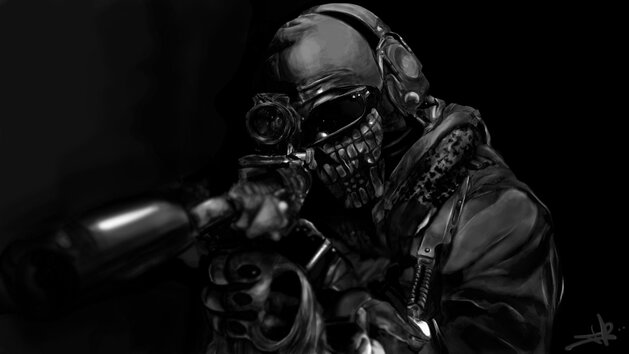

hhhhhhhhhhhhhhhhhhhhhhhhhhhhhhhhhhhhhhhhhhhhhhhhhhhhhhhhhhhhhhhhhhhhh
hhhhhhhhhhhhhhhhhhhhhhhhhhhhhhhhhhhhhhhhhhhhhhhhhhhhhhhhhhhhhhhhhhhhhh
hhhhhhhhhhhhhhhhhhhhhhhhhhhhhhhhhhhhhhhhhhhhhhhhhhhhhhhhhhhhhhhhhhhhhhh
hhhhhhhhhhhhhhhhhhhhhhhhhhhhhhhhhhhhhhhhhhhhhhhhhhhhhhhhhhhhhhhhhhhhhhhh
hhhhhhhhhhhhhhhhhhhhhhhhhhhhhhhhhhhhhhhhhhhhhhhhhhhhhhhhhhhhhhhhhhhhhhhhh
hhhhhhhhhhhhhhhhhhhhhhhhhhhhhhhhhhhhhhhhhhhhhhhhhhhhhhhhhhhhhhhhhhhhhhhhhh
hhhhhhhhhhhhhhhhhhhhhhhhhhhhhhhhhhhhhhhhhhhhhhhhhhhhhhhhhhhhhhhhhhhhhhhhhhh
hhhhhhhhhhhhhhhhhhhhhhhhhhhhhhhhhhhhhhhhhhhhhhhhhhhhhhhhhhhhhhhhhhhhhhhhhhhhh
hhhhhhhhhhhhhhhhhhhhhhhhhhhhhhhhhhhhhhhhhhhhhhhhhhhhhhhhhhhhhhhhhhhhhhhhhhhhhh
hhhhhhhhhhhhhhhhhhhhhhhhhhhhhhhhhhhhhhhhhhhhhhhhhhhhhhhhhhhhhhhhhhhhhhhhhhhhhhh
hhhhhhhhhhhhh
Past

Pre-military
hhhhhhhhhhhhhhhhhhhhhhhhhhhhhhhhhhhhhhhh
Simon Riley had a very traumatic childhood while growing up in Manchester,
England because of his heartless father. His father often brought dangerous animals back to their home
and taunted him with them, even going so far as to force Simon to kiss a snake. When he and his younger
brother Tommy grew older, Tommy would always wear a skull-mask at night to scare Simon.
Simon's father would sometimes take him to the Bone Lickers concerts. At one concert,
his father made him laugh at the death of a prostitute who had overdosed on drugs.
hhhhhhhhhhhhhhhhhhhhhhhhhhhhhhhhhhhhhhhh
hhhhhhhhhhhhhhhhhhhhhhhhhhhhhhhhhhhhhhhhhhhhhhh
Joining the military
hhhhhhhhhhhhhhhhhhhhhhhhhhhhhhhhhhhhhhhh
Joining the Military
Simon used to be an apprentice butcher at a grocery but joined the military
after the September 11 attacks occurred.
He eventually was accepted into the Special Air Service.
hhhhhhhhhhhhhhhhhhhhhhhhhhhhhhhhhhhhhhhh
hhhhhhhhhhhhhhhhhhhhhhhhhhhhhhhhhhhhhhhhhhhhhhh
hhhhhhhhhhhhhhhhhhhhhhhhhhhhhhhhhhhhhhhhhhhhhhh
Task Force 141
hhhhhhhhhhhhhhhhhhhhhhhhhhhhhhhhhhhhhhhh
Ukraine
hhhhhhhhhhhhhhhhhhhhhhhhhhhhhhhhhhhhhhhh
At one point, he was sent to deal with terrorists who had taken hostages at a grade school in Ukraine.
He deliberately let himself be caught and told the terrorists and the children about his past before
the rest of his team arrived to free him and the children. One girl asked him if the story of
Simon "Ghost" Riley was true and if Riley was Ghost.
He responded saying "true enough to that lot".